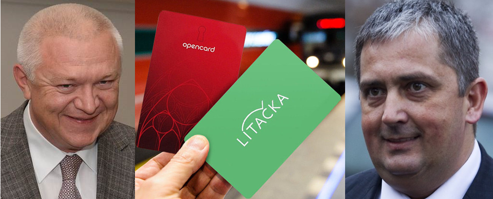

Pražská Lítačka – věci, o kterých se veřejně nesmí mluvit
Etický kodex
Pro zajištění objektivity uvedených informací na těchto stránkách jsou v textech označeny barevně následující skupiny informací:
Informace jako kvalifikované závěry nebo komentáře z veřejně dostupných zdrojů nebo zdrojů uvedených na těchto stránkách – černý text
Informace přejaté beze změny z veřejně dostupných zdrojů nebo zdrojů uveřejněných na těchto stránkách – modrý text
Informace, které nelze z veřejně dostupných zdrojů potvrdit, nebo informace ze zdrojů, které nemůžeme veřejně publikovat – zelený text.
Zveřejňujeme plné znění cenzurovaného anonymního dopisu zaslaného zastupitelům Magistrátu hlavního města Prahy, který obdrželi na konci léta. Zastupitelé městské vládní koalice ho i přes zásadní informace nehodlají prověřit i přes možnost značného plýtvání penězi daňových poplatníků
Obsah zveřejňujeme proto, že došlo k veřejné cenzuře textu. Obsah dopisu byl zveřejněný dne 8. září 2016 v 15 hodin na internetovém serveru parlamentilisty.cz, ze kterého byl po několika hodinách odstraněný.
http://www.mojecelebrity.cz/clanek/josef-prazan-skutecne-pozadi-karty-litacka-2633515
Veřejná zakázka na pořízení nové Lítačky nebyla dosud vysvětlena a z veřejně dostupných zdrojů plyne, že byl při pořízení nového systému porušen zákon o veřejných zakázkách.
Skutečné pozadí karty Lítačka
Nová karta Lítačka je projektem silné vlivové skupiny uvnitř hnutí ANO, které je navázáno na ministerstvo dopravy a České dráhy. Jde o Jaroslava Faltýnka (předsedu poslaneckého klubu pověřeného jednáním o staronové koalici na HMP) a Milana Ferance (prvního náměstka ministra dopravy). Každodenní agendu pak vyřizuje právník Agrofertu Květoslav Hlína (připravil a provedl výměnu vedení Dopravního podniku Praha). Politicky je tento obchod zastřešen dohodou mezi Jaroslavem Faltýnkem a Petrem Hulínským (aktuálně náměstkem ministra vnitra).
Na základě činnosti této skupiny Praha zvolila bez výběrového řízení dodavatele nové karty společnost XT-Card, jejíž část za nevýhodných finančních podmínek koupila ČD - Informační systémy a kde zároveň třetinový obchodní podíl drží skupina J&T. Primátorka Adriana Krnáčová pak spolu s náměstkem Petrem Dolínkem za ČSSD kartu tajně prosadila na základě nepravdivých faktů, přičemž využili negativního postoje veřejnosti k Opencard, ale také podmíněných rozsudků bývalého vedení HMP. Paradoxně přitom odmítli oficiální nabídku Českých drah, které byly okamžitě připraveny rozšířit služby na vlastním (státním) systému inKarta. Takový postup by ovšem zcela narušil obchodní model realizovaný Faltýnkovou skupinou.
„Je skvělé pozorovat, že o Lítačku je takový zájem. Je vidět, že i občané se chtějí zbavit závislosti na té červené kartě Opencard, která byla symbolem dob, kdy tu miliardy mizely v černých dírách. Doufám také, že ode dneška už nikdo nebude pochybovat, že se jedná o skutečně funkční systém, jehož pořízení nás vyšlo na necelé dva miliony. Některým opozičním zastupitelům to přišlo nemožné, ale teď už snad vidí, že to lze i za takovou částku,“ řekla primátorka hl. m. Prahy Adriana Krnáčová.
http://www.praha.eu/jnp/cz/potrebuji_resit/litacka/aktuality/praha_zacala_vydavat_litacku.html
Reálné náklady a zároveň výběr dodavatel pro městskou společnost Operátor ICT je zahalen tajemstvím a to údajně kvůli obchodnímu sporu s dodavatelem Opencard. Už podle předcházejících zjištění médií by provoz Lítačky skutečně mohl vyjít město mnohem dráže, než různě uvádí primátorka. Navíc bude zapotřebí systém modernizovat, což si vyžádá další rozsáhlé investice.
O tom, že Lítačka vyjde na deset milionů, opakovaně hovořila právě primátorka. Včera se hájila tím, že opozice smíchala „jablka a hrušky“. „Deklarovala jsem jedinou věc, a to, že pořizovací náklady jsou deset milionů, a za tím si stojím. Pořizovací náklady Opencard byly mnohem vyšší, tedy kolem 160 milionů,“ uvedla a dodala, že opozice zaměňuje pořizovací a provozní náklady. Do ceny deseti milionů avizované v únoru prý výdaje za provoz Lítačky nezahrnula. „Jaké budou provozní náklady na Lítačku, uvidíme po ukončení pilotního provozu. Já to momentálně nevím a také nevím, co fabulují kolegové,“ řekla a doplnila, že náklady na provoz zelené karty hodlá zveřejnit v létě. Krnáčová věří, že udělala dobře, když karty vyměnila, protože zbavila Prahu závislosti na firmě a „nevystavuje město ohrožení, že někdo systém vypne“. Tvůrce Opencard, firma eMoneyServices, podle ní chtěl za starou červenou kartu řádově 2,7 milionu měsíčně.
http://praha.idnes.cz/naklady-na-litacku-038-/praha-zpravy.aspx?c=A160527_2249359_praha-zpravy_nub
Také na základě zcela nepřesných informací o projektu Lítačka začal s Adrianou Krnáčovou spolupracovat bývalý poradce a tajemník dvou primátorů za ODS Marek Hanč. Jeho obchodní aktivity jsou přímo napojeny na třetinového vlastníka XT-Card prostřednitvím společnosti Waldštejn Catering Praha, kterou spoluvlastní přímo s Dušanem Palcrem a zároveň se švýcarskou investiční skupinou Touzimski Kapital AG. Ta mimo jiné spoluvlastní BigBoard a proto s příchodem Marka Hanče jako poradce primátorka Adriana Krnáčová změnila podobu Pražských stavebních předpisů ve prospěch reklamní skupiny. (Mimochodem bývalý ředitel Odboru městského investora Jan Beránek - a nyní policií obviněný kvůli posvěcení víceprací na tunelu Blanka - byl na svoji pozici prosazen přes bývalého primátora Bohuslava Svobodu stejnou vlivovou skupinou).
https://or.justice.cz/ias/ui/rejstrik-firma.vysledky?subjektId=400633&typ=PLATNY
https://or.justice.cz/ias/ui/rejstrik-firma.vysledky?subjektId=701627&typ=PLATNY
Cílem Lítačky a jejího provozovatele XT-Card je získat přes obdobný obchodní model jako Haguess s Opencard dodávky nutné pro provoz karty a zároveň do ní integrovat funkcionality inKarty Českých drah (tedy přesně obráceně než nabízely České dráhy Praze). Ve velmi krátké době dojde rovněž k nutné náhradě všech modulů Opencard, které nevyhnutelně využívá Lítačka. Provoz tedy rozhodně v průběhu času nezlevní, ale přibudou další náklady. Ty se ovšem mohou hradit také z Dopravního podniku Praha, v jehož čele nyní sedí bývalý koncipient právní kanceláře Květoslava Hlíny.
Na pozadí naprosto netransparentní akce Lítačka je prosazován mnohem větší obchodní zájem. Spojením Lítačky a inKarty by vznikl silný subjekt, který by mohl být bez výběrových řízení nositelem tzv. jednotného tarifu - národní karty - se všemi dodatečnými obchodními službami. Tím by se také XT-Card jako subdodavateli otevřely zcela mimořádné obchodní možnosti.